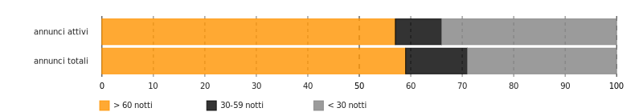
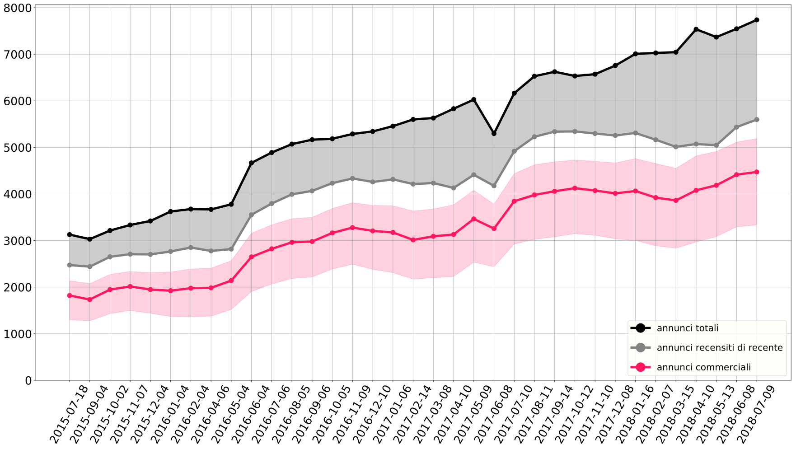
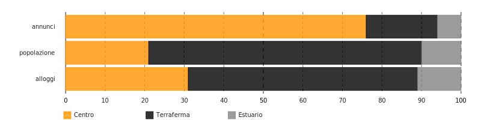
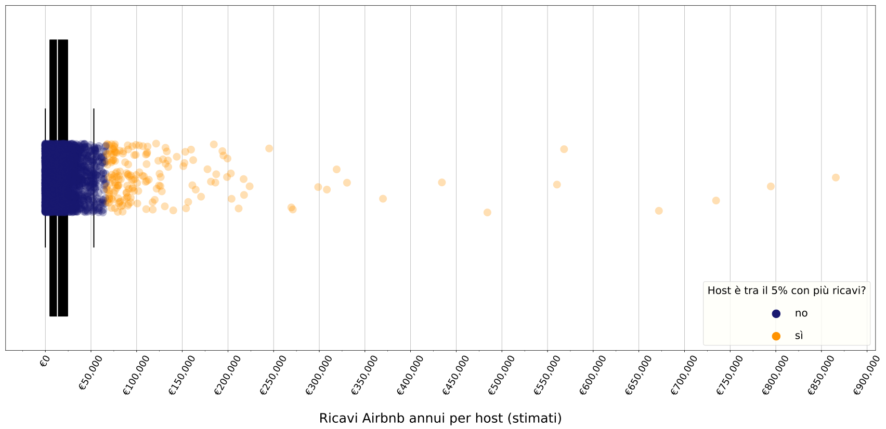
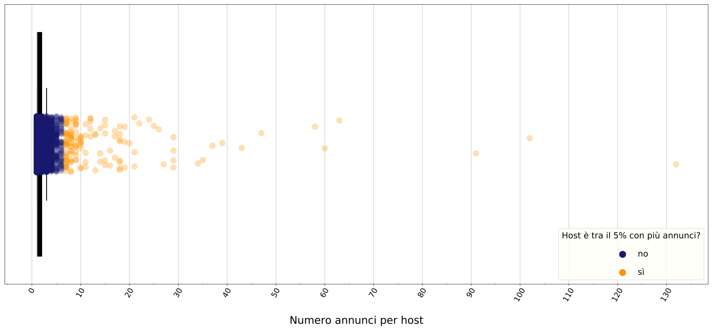

Venezia
InsideAirbnb Infokit · 2018-07-09
Scarica il report in PDF
I numeri di Airbnb a Venezia
In data 2018-07-09 risultano presenti su Airbnb ben 7738 annunci per stanze o appartamenti nel Comune di Venezia.
7738 annunci totali
76% annunci è per case intere
59% annunci è prenotato 60+ notti l'anno
61% è di un host che affitta più case o stanze (mulithost)
Di questi, almeno 5598 possono definirsi attivi, avendo ricevuto una recensione - e dunque una prenotazione - negli ultimi 6 mesi.
In rapporto alla popolazione e allo stock abitativo locale, questo numero significa che ci sono circa 3 annunci ogni 100 residenti del Comune, e 5 annunci ogni 100 alloggi.
Il 76% degli annunci è un annuncio per affittare una casa intera, e non una stanza, dunque con un maggior peso in termini di posti letto destinati al turismo. Sulla base delle recensioni lasciate dagli ospiti e del fatto che Airbnb stessa ha definito come 2.8 notti la lunghezza media di un soggiorno a Venezia, si stima inoltre che il 59% degli annunci, ovvero 4551, sia stato occupato per più di 60 notti l'anno. Questa cifra si può considerare come indicativa degli spazi sottratti al mercato residenziale, soprattutto considerato che difficilmente un annuncio è occupato per tutto il tempo per cui è reso disponibile.
Fonte: InsideAirbnb

San Francisco è stata una delle prime città a studiare il fenomeno di Airbnb e l’impatto dell’economia da esso promossa sul tessuto urbano cittadino. Nel report del San Francisco Budget Analyst’s Office, si procede a conteggiare il numero di annunci e host che utilizzano Airbnb in maniera definita “commerciale”. Nel report, si definisce come commerciale un annuncio che viene effettivamente occupato per più di 58 giorni l’anno, se si tratta si un annuncio per una casa/appartamento intero; o per più di 88 giorni l’anno, nel caso si tratti di un annuncio per una stanza. Tale definizione è un’utile demarcazione in quanto, affinché un annuncio possa essere occupato per così tanti giorni l’anno, esso probabilmente è reso disponibile per almeno il doppio del tempo. E questo considerando un tasso di occupazione del 50%, come Aribnb suggerisce di considerare, che è comunque alto. In questo modo, tale demarcazione mira a includere nella categoria di “commerciale” tutti quegli annunci che presuppongono una non-occasionalità della locazione turistica e che comportano la probabile sottrazione dell’immobile dal numero degli alloggi disponibili per i residenti, dato l’alto numero di giorni in cui sono disponibili ad ospitare turisti. 58% annunci commerciali A Venezia, utilizzando questa definizione, il 58% degli annunci può essere definito “commerciale”.
Fonte: InsideAirbnb 
25% più annunci in un anno Rispetto allo stesso periodo dell'anno scorso, gli annunci presenti sulla piattaforma per la città di Venezia sono aumentati di 1574 unità (crescita del 25%).
Distribuzione geografica ineguale
Gli annunci non sono distribuiti uniformemente nel territorio del Comune. Il 76% si trova nel Centro Storico, mentre solo il 6% in Estuario e il 18% in Terraferma.
Fonti: InsideAirbnb, Comune di Venezia (popolazione residente al Dic. 2017), ISTAT (censimento 2011)

Nel Centro Storico di Venezia
11 annunci ogni 100 residenti
12% degli alloggi è su Airbnb
In rapporto agli abitanti, questo significa che nel Centro Storico ci sono 11 annunci di Airbnb ogni 100 residenti. Questo numero si ferma a 2 in Estuario e a 1 in Terraferma.
In rappporto allo stock abitativo totale, vuol dire che circa il 12% delle case del Centro Storico è su Airbnb.
Le case probabilmente sottratte ai residenti, ovvero gli annunci per una casa intera affittati per più di 60 notti l'anno, sono 3475 (45% del totale annunci). Di queste, il 82% - 2853 case/annunci - nel solo Centro Storico.
Fonte: InsideAirbnb

In confronto, questa è la distribuzione geografica del numero di strutture e di posti letto disponibili nel Comune, in strutture ricettive regolari (iscritte nell'elenco delle attività ricettive alberghiere e extralberghiere del Comune).

Queste immagini sono utili come spunto per una serie di indagini più approfondite. Innanzitutto, confrontare i numeri assoluti degli annunci di Airbnb con i numeri di struttre e posti letto delle attività ricettive permette di comprendere la mole del fenomeno Airbnb in relazione al numero delle strutture registrato presso il Comune. La distribuzione geografica di tali numeri permette inoltre di chiedersi quanto l'offerta su Airbnb sia similare o complementare all'offerta ricettiva tradizionale. Un primo passo dunque per interrogarsi su quale possa essere il suo impatto sulle dinamiche locali - a livello cittadino e di quartiere. Per esempio, se l'offerta di posti letto rispecchia le dinamiche del settore ricettivo tradizionale, c'è da domandarsi se davvero Airbnb stia proponendo ai suoi guest quel turismo “sano”, di redistribuzione dei flussi turistici, di cui spesso si vanta. D'altra parte, se l'offerta si concentra in maniera squilibrata in zone tipicamente non-turistiche, allora c'è da chiedersi quali siano le conseguenza di questa “perturbazione turistica” sulla vita sociale ed economica dei residenti che le abitano.
Distribuzione dei ricavi poco condivisa
Secondo Airbnb, un host veneziano che affitta un appartamento intero per 2 ospiti, guadagna in media €1602 al mese, ovvero €19224 l'anno.
I dati di InsideAirbnb sembrano confermare un simile valore mediano, ma allo stesso tempo permettono anche un'analisi più dettagliata della distribuzione delle risorse e degli equilibri nell'economia “condivisa” sostenuta dalla piattaforma. Tale analisi suggerisce che i ricavi generati non siano affatto distribuiti in maniera condivisa tra gli utenti della piattaforma, ma che pochi host concentrino il grosso del guadagno, in maniera quindi ben poco “condivisa”.
Considerando solo gli annunci attivi almeno una volta negli ultimi mesi, secondo i dati di InsideAirbnb, il ricavo annuale mediano di un host è stimato a €16565, mentre quello medio a €25363. €16565 il ricavo annuo mediano per host (stima)Un appartamento intero rende l'anno circa €12699, come valore mediano. Una stanza privata invece €8466. Ci sono ovviamente differenze geografiche: il ricavo mediano nel Centro Storico per una casa è di €14025, mentre scende a €7245 in Estuario e a €9818 in Terraferma. Va sottolineato che queste sono solo stime basate sui giorni affittati tramite Airbnb, ed escludono quindi eventuali ricavi provenienti dall'affitto dello stesso appartamento su altre piattaforme (come Booking).
132 il numero di annunci dell'utente con più annunciI valori mediani e medi per annuncio offrono una visione limitata della realtà; ci sono infatti molte distinzioni da fare. Già la discrepanza tra valore mediano e valore medio ci suggerisce come i ricavi non siano distribuiti in maniera equa, ma ci sia una minoranza con molti più ricavi degli altri. Ed è così - basti considerare, per esempio, che il ricavo massimo annuale per un host è di €865725 e che un host arriva ad avere 132 annunci.
Su Airbnb, il 5% degli host con più annunci possiede il 30% degli annunci totali e il 5% degli host con il più alto profitto vede entrare nelle proprie tasche il 32% del totale generato dagli annunci su Airbnb a Venezia. Il due grafici seguenti provano a illustrare questa distribuzione: considerate che tutti i pallini blu scuro, messi assieme, coprono il 95% degli host.
Fonte: InsideAirbnb

Fonte: InsideAirbnb

27% host controlla il
61% degli annunciTali valori sono possibili perchè, di fatto, sulla piattaforma abbondano host che affittano decine e decine di appartamenti, gestendo quello che, più che un tradizionale “home sharing”, sembra una rete di strutture turistiche decentralizzate per la città. Il 27% degli host controlla il 61% degli annunci. Le seguenti tre mappe mostrano la distribuzione degli annunci dei tre host che gestiscono il più alto numero di annunci.
La seguente tabella contiene invece i dettagli dei 10 host con più annunci Airbnb a Venezia. Leggendo le descrizioni, quanti assomigliano al tipico host descritto da Airbnb, ovvero un privato che affitta i propri spazi per condividerli con i suoi ospiti?
| Nome | Descrizione Host | Annunci Totali | Annunci per Appartamenti |
|---|---|---|---|
| Faville - Juice | Hello! We are young ladies working at Faville Tours and Juice Glam agencies. We love our city: Venice is unique and magic! Discover our city staying at our apartments located in the heart of Venice. Our purpose?! It's do the best to ensure you a memorable and sspecial stay in Venice! And apart from accommodation, make your stay more comfortable booking with us extra services as parking, private transfers, excursions and guided tour. | 132 | 132 |
| City Apartments | Siamo un'agenzia veneziana formata da un gruppo di persone affiatate che lavorano in squadra per fornire al cliente il massimo dell'ospitalità. Da 2 anni lavoriamo nelle locazioni turistiche e quindi abbiamo parecchia esperienza che mettiamo a disposizione dei nostri clienti. Ci auguriamo di fare sempre meglio e di farvi vivere un'esperienza indimenticabile nella città più bella del mondo. | 102 | 102 |
| Rent It Venice | Property manager Rent it Venice nasce per poter soddisfare la forte richiesta di appartamenti turistici sulla città di Venezia\Mestre. Già specializzati e leader del settore per le affittanze tradizionali con il marchio Planning Pool, abbiamo strutturato una divisione di professionisti che ha come obbiettivo il difficile compito di far trascorrere una indimenticabile vacanza al turista che voglia soggiornare nelle nostre strutture, noi ci occupiamo di tutto, dall’accoglienza alle pulizie fino alla gestione/manutenzione dell’intero alloggio. | 91 | 91 |
| Raffaella | Hello everybody, I'm Venetian native and love my beautiful city! Our agency Grimaldi apartments and I It'll be our pleasure to you to be welcomed by people loving and knowing Venice like no one else! We manage many properties and try to be as helpful as possible! We do our best every day in order to satisfy your requests. Let's contact us for further info about our apartments, city itself and curiosities! We look forward to meet you in magical Venice! | 63 | 63 |
| My Ovatta Srl | All properties of Best Venice Apartments are located in the historic center of Venice. The facilities have been adequately restored and the continuous maintenance of our staff allows us to guarantee our clients comfortable and well-finished accommodations. Each apartment is equipped with air conditioning, heating, private bathroom with shower and hairdryer, equipped kitchen, bed linen and towels, welcome kit consisting of Shampoo / Shower - soap. For any doubts or requests, the Staff will be at your disposal from the time of booking and for the duration of your stay. Check-in takes places at the reception desk located in Piazzale Roma at Santa Croce 515 where an experienced and friendly staff will be ready to welcoming you and helping with the registration procedures as well as to offer you all the services available, excursions and visits to numerous sites that Venice offers. The reception is open to the public from 8:3AM to 11:PM (with baggage deposit). After 11:PM Check-In is only made online, and only after sending all the guests ID and paying the balance of the tourist tax.After booking you will be contacted by the staff to find out more about your arrival in Venice and to help you organizing your Check-In together. Given the strong flux from and to the airport, we advise all our customers to request and book the shuttle service that we can provide. In fact this service, agreed with a major transfer company and at an appropriate price, will make you avoid queues to public transport. | 60 | 60 |
| ViewsOnVenice | I’m Co-founder and Director of Views on Venice and have over 2 years’ experience in the Venetian short rentals and luxury rentals market. I have grown up within my family’s 15th Century palace on the Grand Canal where I live today with my young family. My loves include travel, scuba diving, fine wine… and Venice! | 58 | 58 |
| Caroline E Marco | The Red House Company is a property management organization that operate in Venice delivering top quality apartments to international visitor's and tourists that want to experience Venice from a different point of view. Living the town at a citizen level instead of the classic and anonymous Hotel stay. We have registered as a company after one year of web marketing consultancy and we now manage various property in Venice with a high standard service and personal relationship with ll our guests. The Red House manages properties of different owners and we have built a reputation thru our quality and intense attention to details and guest's satisfaction. | 47 | 47 |
| EasySuite | 43 | 43 | |
| Mirco Optyflat | 39 | 38 | |
| Abaca | Welcome in Venice! | 37 | 37 |
Scorrendo le descrizioni dei profili dei vari host su Airbnb, ci si accorge che alcune sono strutture ricettive tradizionali, come Bed & Breakfast. Strutture che sono sempre esistite anche prima di Airbnb e che utilizzano la piattaforma per pubblicizzare la propria attività online. Airbnb è per loro quindi un po’ come Booking o Expedia: un modo come un altro per offrire il proprio servizio, nulla a che fare con l’economia condivisa. Diversi altri profili rientrano invece nella categoria di booking managers e agenzie immobiliari: attività professionali che gestiscono appartamenti da affittare ai turisti per conto dei proprietari. Proprietari che di veneziano e locale magari hanno ben poco, se non una o più case vuote da affittare a turisti quasi tutto l’anno. Come si può evincere dalle descrizioni di alcuni di questi “host”, talvolta nemmeno l’agenzia o l’intermediario è davvero del luogo, ma opera in tutta Italia o addirittura in tutta Europa o nel mondo. L’agenzia fa così da prestanome all’annuncio, aggiungendo un livello di ambiguità e occultando qualsiasi informazione identificativa sul proprietario - dati che invece potrebbero essere utili anche alle autorità per fini fiscali e di controllo. Alcuni degli host che operano in questo campo lo fanno in maniera dissimulata, gestendo decine e decine di appartamenti ma avendo un profilo in cui ci si presenta come un nome proprio, da privato cittadino.
4% il ricavo generato da host non-commerciali.Alla luce di tutto ciò, è chiaro che sulla piattaforma si trovano annunci e profili di diverse tipologie, e che l'impatto di ciascuno sulle dinamiche economiche e residenziali locali varia in funzione di questo. Sorge allora la domanda: quanti sono gli host che usano effettivamente Airbnb in maniera non professionale, per affittare quello che probabilemente è il loro luogo di abitazione usuale? Stando agli ultimi dati, solo il 28%, che gestisce il 21% degli annunci totali e che si stima percepisca il 4% dei ricavi totali annui generati grazie alla piattaforma.
Come si vede dal grafico, nonostante siano in molti, gli host non-commerciali generano una parte minima dei ricavi in rapporto al volume totale. Airbnb guadagna in percentuale sui ricavi degli host e dei guest e, se dovesse limitare l'uso della piattaforma solamente a questa tipologia di host, vedrebbe i suoi profitti falciati. Si può ben immaginare dunque quanti pochi incentivi ci siano affinchè Airbnb, di sua spontanea volontà, decida di limitare l'uso della piattaforma a chi davvero condivide i suoi spazi occasionalmente e in maniera non commerciale, senza sottrarre risorse ai residenti.
Studi e notizie
Italiano
- Agostini; Ilaria, Firenze. Il turismo consuma il diritto alla casa, La Città Invisibile. (2018)
- Agostini; Ilaria, Firenze. L’espulsione della comunità locale in favore del turismo di lusso e del profitto dei pochi, La Città Invisibile. (2017)
- Arata, Giovanni, Elementi per un framework di regolamentazione degli affitti di breve termine, Medium. (2018)
- Bonaccorsi, Manuele; Di Pietro, Lorenzo, AAA Affittasi Italia, Report (RAI3). (2018)
- Ferrara, Ernesto, Case condivise in centro ma ricavi per pochi: così Airbnb ha invaso l’Italia, Repubblica. (2017)
- Fontana, Giorgio, La variabile discriminazione nell’algoritmo di Airbnb, Pagina99. (2016)
- Griswold, Alison, Airbnb non è più l’amico della classe media, Internazionale. (2017)
- Picascia, Stefano; Romano, Antonello; Teobaldi, Michela, The Airification of Cities, LADEST · Università di Siena. (2017)
Internazionale
- Barron, Kyle; Kung, Edward; Proserpio Davide, The Sharing Economy and Housing Affordability: Evidence from Airbnb, NBER - UCLA - USC. (2018)
- Boone, Alastair, There's New Research Behind the Contention that Airbnb Raises Rents, CityLab / The Atlantic. (2017)
- Gurran, Nicole; Phibbs, Peter, When Tourists Move In: How Should Urban Planners Respond to Airbnb?, Journal of the American Planning Association · Routledge. (2017)
- Hill, Steven, The Unsavory Side of Airbnb , The American Prospect. (2015)
- Jamasi, Zohra, Regulating Airbnb and the Short-Term Rental Market. An overview of North American regulatory frameworks, CCPA. (2017)
- Lee, Danye, How Airbnb Short-Term Rentals Exacerbate Los Angeles’s Affordable Housing Crisis: Analysis and Policy Recommendation, Harvard Law & Policy Review. (2016)
- Merante, Mark; Mertens Horn, Keren, Is Home Sharing Driving up Rents? Evidence from Airbnb in Boston, UMass Boston. (2016)
- Samaan, Roy, Airbnb, rising rent and the housing crisis in Los Angeles , LAANE. (2015)
- San Francisco Budget and Legislative Analyst’s Office, Analysis of the impact of short-term rentals on housing, City of San Francisco. (2015)
- Wachsmuth, David; Chaney, David; Kerrigan, Danielle; Shillolo, Andrea; Basalaev-Binder, Robin; , The High Cost of Short-Term Rentals in New York City, Urban Politics and Governance research group · McGill University. (2018)
Note Metodologiche
Questi dati non sono perfetti. Per quanto riguarda gli annunci Airbnb, la fonte dei dati utilizzati è InsideAirbnb, un progetto ideato da Murray Cox e nato dalla convinzione che i dati su Airbnb debbano essere di pubblico dominio, invece che restarsene chiusi sui server privati della startup di Silicon Vally. In fondo, si può discutere su di chi siano questi dati (degli utenti? dei cittadini? della piattaforma? dello Stato? Di quale Stato?), ma non sul fatto che cittadini e amministrazioni abbiano il diritto ad accedere a dati quantitativi per conoscere, studiare, vigilare e legiferare sui cambiamenti qualitativi indotti da un'azienda che, sebbene s'affacci sul Pacifico, ha il potenziale di irrompere sulle dinamiche sociali, economiche e residenziali in tutto il mondo. I dati sono stati raccolti monitorando il sito Airbnb attraverso la tecnica dello scraping. I dati sono poi stati pubblicati online sul sito con una licenza di pubblico dominio: sono quindi scaricabili e utilizzabili da tutti gratuitamente, senza alcuna restrizione. Si differenziano da dati offerti occasionalmente da Airbnb o altre agenzie in qualche modo affiliate perchè sono stati raccolti in maniera indipendente.
Questi dati grezzi contengono informazioni su tutti gli annunci che si è riusciti a trovare online in ogni città e su chi siano gli host; sui prezzi pubblicizzati al momento del monitoraggio; sul numero di recensioni presenti per ogni annuncio; sull'indirizzo approssimativo... Non sono dati perfetti perchè non c'è modo di sapere per quante notti l'anno vengono davvero occupati gli annunci, in che periodi esatti o per quanti notti sono resi disponibili seppur non ricevano prenotazioni. Non si può sapere con certezza se un annuncio è di fatto attivo oppure no. Se più annunci sono in realtà proprietà dello stesso host, quando nel profilo virtuale magari risultano nomi diversi. Anche la posizione (e quindi il quartiere) di un'annuncio non è del tutto sicuro, in quanto l'indirizzo esatto viene fornito solo a chi effettua la prenotazione. Si stima che le coordinate pubblicate su Airbnb nella pagina pubblica di un annuncio abbiano una precisione di 0-150 m, cosa che può far sì che stanze o appartamenti nello stesso edificio appaiano in punti diversi o addirittura in quartieri confinanti. . Ancora una volta, si possono solo fare stime, e ogni stima rischia di calcolare al ribasso o al rialzo la vera portata del fenomeno. Purtroppo Airbnb non collabora volentieri quando si tratta di rilasciare queste informazioni e addirittura insabbia i dati per fornire un quadro che più si adatta alle strategie di marketing dell'azienda. Cosa vuol dire tutto ciò? Bisogna forse rinunciare ad analizzare il fenomeno? Le domande sull'impatto di aziende come Airbnb sono però troppo rilevanti per poter essere ignorate e da qualche parte bisogna pur iniziare.
I seguente paragrafi provano a illustrare nel dettaglio e con un linguaggio comprensibile il tipo di calcoli che sono stati fatti in questo report e le motivazioni dietro tali operazioni. L'idea è di permettere a chi legge il report di capire i limiti e le criticità delle stime fatte, ma allo stesso tempo di comprenderne la logica (e eventualmente suggerire soluzioni per migliorare il lavoro!). Il messaggio che si vuole provare a trasmettere è che i dati sono sì imprecisi; le stime saranno pure ricche di sfumature e di decisioni soggettive: ma questo non vuol dire che non possano essere alla base di un dibattito collettivo e condiviso sul fenomeno. Anzi, proprio per queste caratteristiche di complessità e incompletezza dei dati, si spera che essi servano come spunto per ulteriori domande e indagini animate dallo stesso spirito di messa in discussione, trasparenza e condivisione.
- Stimare il numero di giorni che un annuncio è stato occupato. Nel suo report, Airbnb ha dichiarato che la durata media di un soggiorno in Venezia è di 2.8 notti. Per ogni annuncio, InsideAirbnb fornisce inoltre seguenti variabili prese dal profilo pubblico di ogni annuncio: numero medio recensioni mensili; numero minimo notti prenotabili . Dal numero medio di recensioni mensili si è stimato il numero di prenotazioni effettuate secondo tre diversi scenari:
- Scenario impatto minimo: il 100% degli ospiti ha lasciato una recensione. Il numero di prenotazioni effettuate mensili è dunque uguale al numero di recensioni mensili. Nel grafico "Crescita nel tempo degli annunci su Airbnb", il margine inferiore della fascia color magenta corrisponde con il numero degli annunci che verrebbero considerati commerciali secondo questo scenario. Nel grafico "Distribuzione degli annunci e dei ricavi tra host non-commerciali, Venezia", questo scenario segna il margine superiore della fascia arancione che indica il numero degli annunci e degli host che verrebbero considerati non-commerciali e i loro ricavi, secondo questo scenario
- Scenario principale: il 50% degli ospiti ha lasciato una recensione. Il numero di recensioni mensili è dunque moltiplicato per 2, per ottenere il numero di prenotazioni effettuate. Questo è lo scenario utilizzato in tutto il report se non esplicitato altrimenti. Le motivazioni di questa scelta sono meglio illustrate nella pagina di InsideAirbnb
- Scenario alto impatto: solo il 30.5% degli ospiti ha lasciato una recensione. Il numero di recensioni mensili è dunque moltiplicato per 3.28 per ottenere il numero di prenotazioni effettuate. Le motivazioni dietro questa scelta sono dovute al fatto che tale tasso è quello utilizzato nel report del San Francisco Budget Analyst’s Office per lo scenario ad alto impatto. Nel grafico "Crescita nel tempo degli annunci su Airbnb", il margine superiore della fascia color magenta corrisponde con il numero degli annunci che verrebbero considerati commerciali secondo questo scenario. Nel grafico "Distribuzione degli annunci e dei ricavi tra host non-commerciali, Venezia", questo scenario segna il margine inferiore della fascia arancione che indica il numero degli annunci e degli host che verrebbero considerati non-commerciali e i rispettivi ricavi, secondo questo scenario.
- Se il numero minimo di notti prenotabili è minore di 2.8 (la durata media di un soggiorno qui secondo Airbnb):
(numero prenotazioni effettuate l'anno * 2.8) * 12
- Se il numero minimo di notti prenotabili è superiore a 2.8:
(numero prenotazioni effettuate l'anno * numero minimo notti prenotabili)Inoltre, il tasso di occupazione è stato fissato al 70% dell'anno, come suggerito da InsideAirbnb per evitare errori nel caso in cui un host abbia cambiato il numero minimo di notti di recente e solo per qualche mese l’anno (per esempio aumentandolo durante l’alta stagione). È inoltre una misura conservativa, che permette di sottostimare il fenomeno piuttosto che sovrastimarlo.
numero notti prenotate l'anno * prezzo per notteVa notato che i prezzi su InsideAirbnb sono in $; sono pertanto stati convertiti in € utilizzando il tasso di scambio di €1.00 = $0.86 (tasso del 03/08/2018)
| localita | quartiere | municipalita | gruppo |
|---|---|---|---|
| Dorsoduro | Dorsoduro-S.Polo-S.Croce-Giudecca | Venezia-Murano-Burano | Centro |
| Giudecca | Dorsoduro-S.Polo-S.Croce-Giudecca | Venezia-Murano-Burano | Centro |
| Isola San Giorgio in Alga | Dorsoduro-S.Polo-S.Croce-Giudecca | Venezia-Murano-Burano | Centro |
| Isola delle Tresse | Dorsoduro-S.Polo-S.Croce-Giudecca | Venezia-Murano-Burano | Centro |
| Isola ex Forte S.Angelo della Polve | Dorsoduro-S.Polo-S.Croce-Giudecca | Venezia-Murano-Burano | Centro |
| Sacca Fisola | Dorsoduro-S.Polo-S.Croce-Giudecca | Venezia-Murano-Burano | Centro |
| Sacca San Biagio | Dorsoduro-S.Polo-S.Croce-Giudecca | Venezia-Murano-Burano | Centro |
| San Polo | Dorsoduro-S.Polo-S.Croce-Giudecca | Venezia-Murano-Burano | Centro |
| Santa Croce | Dorsoduro-S.Polo-S.Croce-Giudecca | Venezia-Murano-Burano | Centro |
| Tronchetto | Dorsoduro-S.Polo-S.Croce-Giudecca | Venezia-Murano-Burano | Centro |
| Cannaregio | S.Marco-Castello-S.Elena-Cannaregio | Venezia-Murano-Burano | Centro |
| Castello | S.Marco-Castello-S.Elena-Cannaregio | Venezia-Murano-Burano | Centro |
| Isola Campalto | S.Marco-Castello-S.Elena-Cannaregio | Venezia-Murano-Burano | Centro |
| Isola La Grazia | S.Marco-Castello-S.Elena-Cannaregio | Venezia-Murano-Burano | Centro |
| Isola Sacca Sessola | S.Marco-Castello-S.Elena-Cannaregio | Venezia-Murano-Burano | Centro |
| Isola San Clemente | S.Marco-Castello-S.Elena-Cannaregio | Venezia-Murano-Burano | Centro |
| Isola San Giorgio | S.Marco-Castello-S.Elena-Cannaregio | Venezia-Murano-Burano | Centro |
| Isola San Michele | S.Marco-Castello-S.Elena-Cannaregio | Venezia-Murano-Burano | Centro |
| Isola San Secondo | S.Marco-Castello-S.Elena-Cannaregio | Venezia-Murano-Burano | Centro |
| Isola San Servolo | S.Marco-Castello-S.Elena-Cannaregio | Venezia-Murano-Burano | Centro |
| San Giorgio Maggiore | S.Marco-Castello-S.Elena-Cannaregio | Venezia-Murano-Burano | Centro |
| San Marco | S.Marco-Castello-S.Elena-Cannaregio | Venezia-Murano-Burano | Centro |
| Sant'Elena | S.Marco-Castello-S.Elena-Cannaregio | Venezia-Murano-Burano | Centro |
| Venezia | S.Marco-Castello-S.Elena-Cannaregio | Venezia-Murano-Burano | Centro |
| Alberoni | Lido-Malamocco-Alberoni | Lido-Pellestrina | Estuario |
| Isola Lazzaretto vecchio | Lido-Malamocco-Alberoni | Lido-Pellestrina | Estuario |
| Isola Ottagono Alberoni | Lido-Malamocco-Alberoni | Lido-Pellestrina | Estuario |
| Isola Poveglia | Lido-Malamocco-Alberoni | Lido-Pellestrina | Estuario |
| Isola San Lazzaro degli Armeni | Lido-Malamocco-Alberoni | Lido-Pellestrina | Estuario |
| Isola Santo Spirito | Lido-Malamocco-Alberoni | Lido-Pellestrina | Estuario |
| Isola ex Batteria Fisolo | Lido-Malamocco-Alberoni | Lido-Pellestrina | Estuario |
| Lido | Lido-Malamocco-Alberoni | Lido-Pellestrina | Estuario |
| Malamocco | Lido-Malamocco-Alberoni | Lido-Pellestrina | Estuario |
| San Lazzaro degli Armeni | Lido-Malamocco-Alberoni | Lido-Pellestrina | Estuario |
| Isola Ottagono San Pietro | S.Pietro in Volta-Pellestrina | Lido-Pellestrina | Estuario |
| Isola Ottagono di Ca' Roman | S.Pietro in Volta-Pellestrina | Lido-Pellestrina | Estuario |
| Pellestrina | S.Pietro in Volta-Pellestrina | Lido-Pellestrina | Estuario |
| San Pietro in Volta | S.Pietro in Volta-Pellestrina | Lido-Pellestrina | Estuario |
| Santa Maria Del Mare | S.Pietro in Volta-Pellestrina | Lido-Pellestrina | Estuario |
| Santa Maria del Mare | S.Pietro in Volta-Pellestrina | Lido-Pellestrina | Estuario |
| Burano | Burano-Mazzorbo-Torcello | Venezia-Murano-Burano | Estuario |
| Isola Buel del Lovo | Burano-Mazzorbo-Torcello | Venezia-Murano-Burano | Estuario |
| Isola Cason Grassabo' | Burano-Mazzorbo-Torcello | Venezia-Murano-Burano | Estuario |
| Isola Cason vecchio di Grassabo' | Burano-Mazzorbo-Torcello | Venezia-Murano-Burano | Estuario |
| Isola La Cura | Burano-Mazzorbo-Torcello | Venezia-Murano-Burano | Estuario |
| Isola La Salina | Burano-Mazzorbo-Torcello | Venezia-Murano-Burano | Estuario |
| Isola Madonna del Monte | Burano-Mazzorbo-Torcello | Venezia-Murano-Burano | Estuario |
| Isola Peschieretta della Granzona | Burano-Mazzorbo-Torcello | Venezia-Murano-Burano | Estuario |
| Isola San Francesco del Deserto | Burano-Mazzorbo-Torcello | Venezia-Murano-Burano | Estuario |
| Isola Santa Cristina | Burano-Mazzorbo-Torcello | Venezia-Murano-Burano | Estuario |
| Mazzorbetto | Burano-Mazzorbo-Torcello | Venezia-Murano-Burano | Estuario |
| Mazzorbo | Burano-Mazzorbo-Torcello | Venezia-Murano-Burano | Estuario |
| San Francesco del Deserto | Burano-Mazzorbo-Torcello | Venezia-Murano-Burano | Estuario |
| Torcello | Burano-Mazzorbo-Torcello | Venezia-Murano-Burano | Estuario |
| Isola Carbonera | Murano-S.Erasmo | Venezia-Murano-Burano | Estuario |
| Isola San Giacomo in Paludo | Murano-S.Erasmo | Venezia-Murano-Burano | Estuario |
| Isola di Tessera | Murano-S.Erasmo | Venezia-Murano-Burano | Estuario |
| Isola ex Ridotto di Crevan | Murano-S.Erasmo | Venezia-Murano-Burano | Estuario |
| Lazzaretto Nuovo | Murano-S.Erasmo | Venezia-Murano-Burano | Estuario |
| Murano | Murano-S.Erasmo | Venezia-Murano-Burano | Estuario |
| Sant'Erasmo | Murano-S.Erasmo | Venezia-Murano-Burano | Estuario |
| Vignole | Murano-S.Erasmo | Venezia-Murano-Burano | Estuario |
| Asseggiano | Chirignago-Gazzera | Chirignago-Zelarino | Terraferma |
| Case Dosa | Chirignago-Gazzera | Chirignago-Zelarino | Terraferma |
| Chirignago | Chirignago-Gazzera | Chirignago-Zelarino | Terraferma |
| Ferrarese | Chirignago-Gazzera | Chirignago-Zelarino | Terraferma |
| Gazzera | Chirignago-Gazzera | Chirignago-Zelarino | Terraferma |
| Giotto Nord | Chirignago-Gazzera | Chirignago-Zelarino | Terraferma |
| Giotto Sud | Chirignago-Gazzera | Chirignago-Zelarino | Terraferma |
| Macello | Chirignago-Gazzera | Chirignago-Zelarino | Terraferma |
| Santa Barbara | Chirignago-Gazzera | Chirignago-Zelarino | Terraferma |
| Sardi | Chirignago-Gazzera | Chirignago-Zelarino | Terraferma |
| Sardi (M.5 - Q.12) | Chirignago-Gazzera | Chirignago-Zelarino | Terraferma |
| Bonduà Est | Zelarino-Cipressina-Trivignano | Chirignago-Zelarino | Terraferma |
| Bonduà Ovest | Zelarino-Cipressina-Trivignano | Chirignago-Zelarino | Terraferma |
| Capitello | Zelarino-Cipressina-Trivignano | Chirignago-Zelarino | Terraferma |
| Cipressina | Zelarino-Cipressina-Trivignano | Chirignago-Zelarino | Terraferma |
| Gatta - Bondu? | Zelarino-Cipressina-Trivignano | Chirignago-Zelarino | Terraferma |
| Maguolo | Zelarino-Cipressina-Trivignano | Chirignago-Zelarino | Terraferma |
| Marocco Zelarino | Zelarino-Cipressina-Trivignano | Chirignago-Zelarino | Terraferma |
| Molino Ronchin | Zelarino-Cipressina-Trivignano | Chirignago-Zelarino | Terraferma |
| Sardi (M.5 - Q11) | Zelarino-Cipressina-Trivignano | Chirignago-Zelarino | Terraferma |
| Scaramuzza | Zelarino-Cipressina-Trivignano | Chirignago-Zelarino | Terraferma |
| Scaramuzza Nord | Zelarino-Cipressina-Trivignano | Chirignago-Zelarino | Terraferma |
| Scaramuzza Sud | Zelarino-Cipressina-Trivignano | Chirignago-Zelarino | Terraferma |
| Selvanese | Zelarino-Cipressina-Trivignano | Chirignago-Zelarino | Terraferma |
| Taru' | Zelarino-Cipressina-Trivignano | Chirignago-Zelarino | Terraferma |
| Tarù | Zelarino-Cipressina-Trivignano | Chirignago-Zelarino | Terraferma |
| Trivignano | Zelarino-Cipressina-Trivignano | Chirignago-Zelarino | Terraferma |
| Zelarino | Zelarino-Cipressina-Trivignano | Chirignago-Zelarino | Terraferma |
| Aeroporto | Favaro-Campalto | Favaro-Veneto | Terraferma |
| Bagaron | Favaro-Campalto | Favaro-Veneto | Terraferma |
| Boaria Baroffio | Favaro-Campalto | Favaro-Veneto | Terraferma |
| Ca' Serafin | Favaro-Campalto | Favaro-Veneto | Terraferma |
| Ca' Serafin Ovest | Favaro-Campalto | Favaro-Veneto | Terraferma |
| Ca' Solaro | Favaro-Campalto | Favaro-Veneto | Terraferma |
| Ca' Solaro Nord | Favaro-Campalto | Favaro-Veneto | Terraferma |
| Ca' Solaro Sud | Favaro-Campalto | Favaro-Veneto | Terraferma |
| Campalto | Favaro-Campalto | Favaro-Veneto | Terraferma |
| Campalto Bagaron | Favaro-Campalto | Favaro-Veneto | Terraferma |
| Campalto CEP | Favaro-Campalto | Favaro-Veneto | Terraferma |
| Campalto Cimitero | Favaro-Campalto | Favaro-Veneto | Terraferma |
| Campalto Gobbi | Favaro-Campalto | Favaro-Veneto | Terraferma |
| Cimitero Campalto | Favaro-Campalto | Favaro-Veneto | Terraferma |
| Dese | Favaro-Campalto | Favaro-Veneto | Terraferma |
| Favaro | Favaro-Campalto | Favaro-Veneto | Terraferma |
| Favaro Cimitero | Favaro-Campalto | Favaro-Veneto | Terraferma |
| Favaro Col San Martino | Favaro-Campalto | Favaro-Veneto | Terraferma |
| Fontana | Favaro-Campalto | Favaro-Veneto | Terraferma |
| Forte Vallon | Favaro-Campalto | Favaro-Veneto | Terraferma |
| Passo Campalto | Favaro-Campalto | Favaro-Veneto | Terraferma |
| Tessera | Favaro-Campalto | Favaro-Veneto | Terraferma |
| Torre Antica | Favaro-Campalto | Favaro-Veneto | Terraferma |
| Ca' Brentelle | Marghera-Catene-Malcontenta | Marghera | Terraferma |
| Ca' Emiliani | Marghera-Catene-Malcontenta | Marghera | Terraferma |
| Ca' Sabbioni | Marghera-Catene-Malcontenta | Marghera | Terraferma |
| Centro Commerciale Panorama | Marghera-Catene-Malcontenta | Marghera | Terraferma |
| Malcontenta | Marghera-Catene-Malcontenta | Marghera | Terraferma |
| Marghera | Marghera-Catene-Malcontenta | Marghera | Terraferma |
| Marghera Catene | Marghera-Catene-Malcontenta | Marghera | Terraferma |
| Marghera Zona Industriale | Marghera-Catene-Malcontenta | Marghera | Terraferma |
| Villabona | Marghera-Catene-Malcontenta | Marghera | Terraferma |
| Volte Grandi | Marghera-Catene-Malcontenta | Marghera | Terraferma |
| Bissuola | Carpenedo-Bissuola | Mestre-Carpenedo | Terraferma |
| Borgo Forte | Carpenedo-Bissuola | Mestre-Carpenedo | Terraferma |
| Borgoforte | Carpenedo-Bissuola | Mestre-Carpenedo | Terraferma |
| Carpenedo | Carpenedo-Bissuola | Mestre-Carpenedo | Terraferma |
| Pra' Secco | Carpenedo-Bissuola | Mestre-Carpenedo | Terraferma |
| Quartiere Pertini | Carpenedo-Bissuola | Mestre-Carpenedo | Terraferma |
| Villaggio Sartori | Carpenedo-Bissuola | Mestre-Carpenedo | Terraferma |
| Altobello | Mestre Centro | Mestre-Carpenedo | Terraferma |
| Borgo Pezzana | Mestre Centro | Mestre-Carpenedo | Terraferma |
| Centro Commerciale Auchan | Mestre Centro | Mestre-Carpenedo | Terraferma |
| Giustizia | Mestre Centro | Mestre-Carpenedo | Terraferma |
| La Favorita | Mestre Centro | Mestre-Carpenedo | Terraferma |
| Marocco | Mestre Centro | Mestre-Carpenedo | Terraferma |
| Marocco Terraglio | Mestre Centro | Mestre-Carpenedo | Terraferma |
| Mestre | Mestre Centro | Mestre-Carpenedo | Terraferma |
| Piave 1860 | Mestre Centro | Mestre-Carpenedo | Terraferma |
| San Lorenzo XXV Aprile | Mestre Centro | Mestre-Carpenedo | Terraferma |
| Villaggio San Marco | Mestre Centro | Mestre-Carpenedo | Terraferma |
| Zona Commerciale via Torino | Mestre Centro | Mestre-Carpenedo | Terraferma |